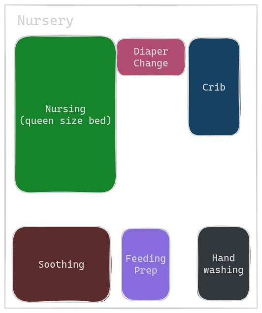
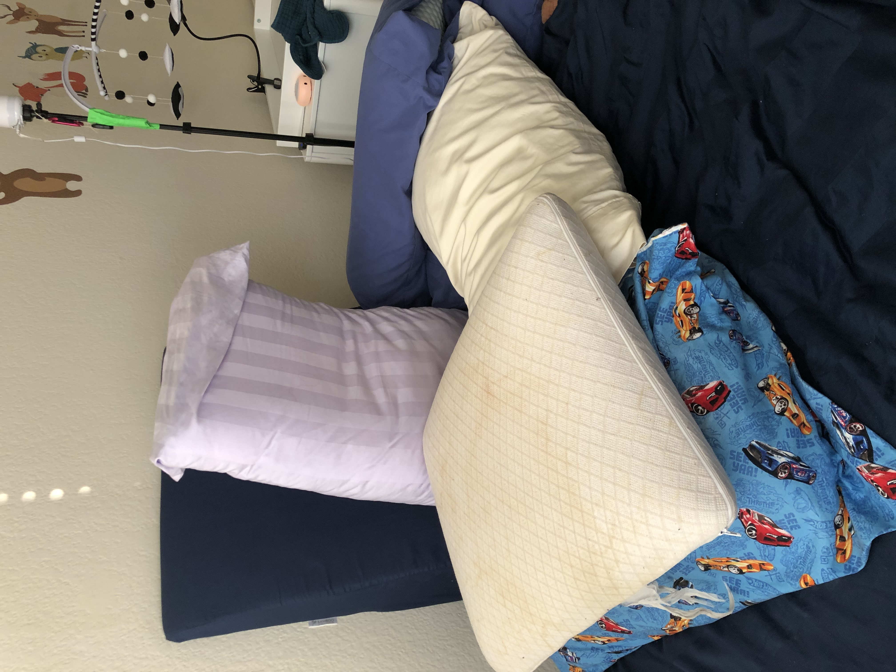

Our Baby Registry¶
We organize our list based on room the items reside in.
Nursery¶

-
Crib: Silva Serena Convertible
- Hardwoods only, and water based finish, greed guard certified -> minimal VOCs emission
- Pricey, but built to last -> can convert to full size bed after purchasing extra parts
-
Mattress: Naturepedic Organic 2-Stage Lightweight Infant & Toddler Mattress with Protector Pad
- gots and greenguard certified
- waterproof coating
-
comes with breathable cover that allows air to flow under the baby -> e.g., in theory babies can breathe through it, so if they accidentally roll over onto their stomach, and their face is pressed against the bed, they can, again, in theory still breath. This is per marketing on their website. I have not personally tested and am not a medical professional, nor am I giving trustworthy advice. These are my personal opinions. Please consult your medical professional, and do not hold me liable.
-
Breathable mattress cover (if mattress does NOT come with one, link)
-
Baby monitor: Babysense Split Screen
- Not wifi based, so even if there is an outage monitor will run
-
Temperature monitor near the crib (NOT in!) (link)
- This one emits, optionally, an amber light when temperature is within acceptable range, and glows blue when room is too cold, and red when room is too hot
- Once glance from anywhere in the room is all it takes to confirm whether room temp is okay
-
Diaper Changing Station
- Mobile for changing table (link) 1. Get high contrast -> baby cannot see well in the first few months 1. We remove the music/rotation box as it is too heavy, and if the mechanism fails, we don't want anything heaving crashing down on baby
- Changing table lamp (link) 1. Clamps onto the changing table 1. Can adjust light temperature (useful to use orange light during night time)
- Dresser as changing table (link) 1. greenguard certified 1. Ideally, to lower VOCs emissions even more, we would've gotten dressor with zero engineered wood if they were more affordaable 1. Top drawer 1. diapers - we prefer Lil Snugglers By Huggies (link) 1. aquafor for diaper rash (link) 1. wet wipes (link) 1. we chose unscented wet wipes that are over 99% water and are hypoallergenic 1. dry wipes (link) 1. helpful for super delicate or tender skin, and for drying 1. Middle drawer - linens - try to get OEKO-TEX certified, or GOTS certified 1. swaddles - more info below 1. At least 6 burp clothes. (link) 1. 3 portable micro fiber towels for when baby pees on the changing pad (link) 1. At least 2 spare bed sheets (link) 1. wash cloths (link) 1. 2 baby towels (link) 1. Bottom drawer - baby clothes - more info below
- Diaper pail (link)
- Soiled linens basket (link)
- Nursing station
- nursing pillows - more below
- Clock (link)
- Feeding Station
- Handwashing
- Scentless hand soap (link)
-
Soothing station #1
- glider - no recommendation as we inherited one from early 90s
-
Bathing Station
- TK
-
Misc.
- Hand lotion that we apply after baby is in bed (link)
Let's discuss swaddles in more detail. Nurses will teach you how to swaddle in the hospital. As a first time parent, I found using the exact same type of blanket as the hospital was quite helpful (link). The fabric is the easiest fabric type to create a tight swaddle with as there is zero stretch. If you pull the fabric tightly, it stays tight. Unfortunately for us, there were out of stock when we most needed them. Hence, we moved on to other, more popular fabric types: jersey cotten w/spandex, and muslin.
Personally I find the jersy cotten w/spandex material the 2nd best to create tight swaddles with. The fabric stretches locally, meaning that it stretches in response to baby's arm movement, without deforming any of the swaddle folds. The fabric is also stiff enough such that we can pull it tightly. The fabric is lighter weight than the hoppital fabric, which is better for both warm weather and layering. Though I find the hospital receiving blankets still better for the tightest swaddles, I find the jersey fabric allows baby to more naturally move (yay spandex), and thus, this fabric has become my personal favorite for swaddling. (link)
Then there are muslin blankets. The fabric here is "spongy", more lightweight than jersey, and highly breathable. More moisture wicking than jersey material. Personally I found it more difficult to swaddle a squirmy baby tightly with muslin since the material is too stretchy and spongy. The fabric would stretch out and later bounce back when pulled on tightly, as opposed to creating a tight wrap. Our baby's arms would escape this swaddle very easily. (this). Would not recommend for a squirmy baby.
Swaddling takes time to learn, takes time to execute, and if done incorrectly, if baby breaks out of swaddle and throws around loose fabrics, SIDS risk increases. And if too tightly wrapped around the hips, may harm baby's hip development. I recommend moving away from swaddle blankets to a swaddle style sleep sack as soon as possible.
Think of a swaddle style sleep sack as a velcro assited "speed swaddle". Time to swaddle decreases by 5x, and if purchasing the correct sleep sack, baby can keep hips loose, and cannot break out of it. We do not recommend a velcro swaddle like this (one), where the fabric that traps the hands by the hips goes all the way up to the neck line. If baby squirms, and moves arms up towards head, baby will also move the entire swaddle. If the swaddle is slightly on the bigger side, then the fabric will move up and over baby's mouth and nose, which certainly doesn't bring mama and papa peace of mind. We also find the hip area too tight.
We recommend swaddle sleep sacks such as the halo swaddle, and the happiest baby sleepea 5 second swaddle. Both of these swaddles have a separate fabric to restrain the arms that can be positioned such that even squirmy baby cannot raise fabrics over baby's face. They also provide loose hips. What's nice about the halo is that there are different temperature rating fabrics for different weather conditions. A downside of both, is that they do not come in premie sizes.
Let's discuss newborn clothes in more detail. We prefer body suits during warm weather, and onesies with two way zippers all the way down to the foot for colder weather. In first two weeks, baby always wore a hat.
Let's discuss nursing pillows in more detail. If baby is small, the brest friend and water proof cover is your bestie. This pillow creates a sturdy platform on which baby can rest at the correct height for breast feeding.
If baby is larger, we recommend the boppy. Same idea, but less bulk/support.
If baby is tiny, we recommend essentially a DIY brest friend. We dub this our "nursing throne" or "nursing cockpit":

We made this with a wedge pillow, and a bunch of firm memory foam pillows
Next let's discuss products we had, but didn't need or do not recommend
- Keekaro peanut - way too big for a newborn and has unnatural divet that separates head area from torso area that just unbalances baby. Also doesn't fit in standard dressing table changing pad constraints. Cold to touch and would always wake warm baby. Wipaeable, but so is a changing pad with no cover. Perhaps this will be useful for bigger baby, but not at all helpful for newborn. Prefer $30 changing pad with waterproof shell.
- 30" by 30" blankets - Too small to swaddle with.
- velcro swaddles whose arm constraints are too close to top of swaddle (explained why above) (link)
Living Room¶
-
Outdoor station
-
Rear facing infant car seat: Clek Liing, in flame retardant free cloth (link)
1. highest ranked car seat for safety by both consumer reports and baby gear lab 1. We picked out this seat first, and looked for a compatable stroller 2nd 1. Low VOCs.
-
Car Window shade link
- Baby on board stickers (link 1, link 2)
- Baby blanket for car (link)
- Inde All Terrain Stroller (link), with maxi cosi adapters for clek liing (link) 1. car seat can attach to stroller 1. Low VOCs
- Bassinet that mounts to stroller (link) 1. Useful to walk the baby in the stroller mounted, sleep approved bassienet. If baby falls alseep, we can leave baby in bassinet, or transfer baby to crib easily
-
Diaper bag link
1. free standing 1. good Internal organization 1. lacking water bottle holders for mama/papa
-
Nursing Cover: link
-
-
Pumping Station
-
Secondary Soothing Station
- couch with pillows to help support arms that are carrying baby
- pack and play (link) - another sleep area for baby, that in our case, is closer to air conditioner
-
Tummy Time Station
- Tummy time mat (link)
- High contrast cards to stimulate baby's vision (included above)
- Mirrors - we found our baby responds most to mirrors (included above)
- High contrast books
- Brightly colored toys for baby to look at
-
Baby Hygiene Items
-
Baby Gear Cleaning Station
- scent free laundry detergent (link)
- eye masks for mama and papa to sleep with (link)
- Bottle Cleaning Brush set (link)
- Mini tub for the kitchen sink to use as the "sink" for baby gear to prevent contamination - hosptial provided this for us
- Baby Dish soap and bottle cleaner (link)
- Baby Bottle countertop drying rack (link)